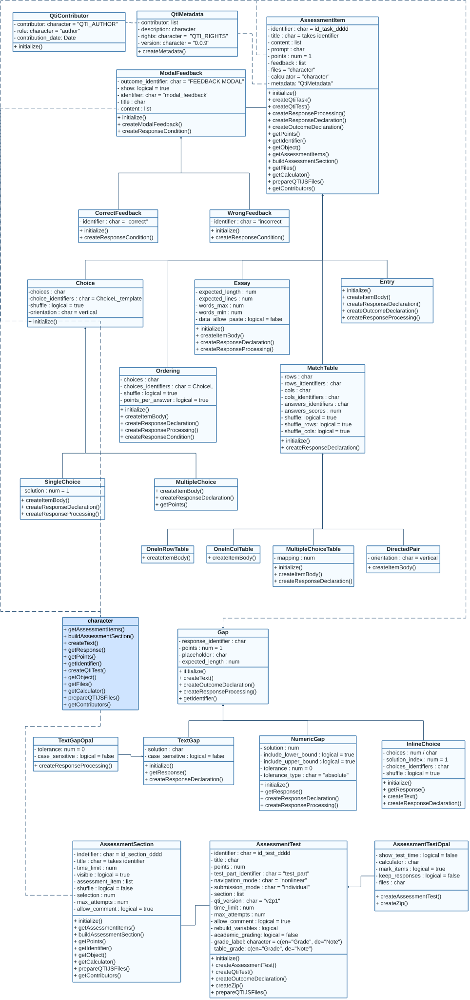

This section is still under construction and only relevant if you
want to create exercises without relying on Rmd files. Under the hood,
rqti uses S4 OOP. This means that you can create all exercise types as
objects, which gives you more flexibility and is much faster. If you are
happy with Rmd, there is nothing wrong using it. If you want to go to
the next level, consider creating exercise objects directly. In the
future we want to add simple constructor functions instead of relying on
the new function, so that the OOP system is more
accessible. Currently, the focus is still on the RMD interface.
First, check out the overview of our classes:

The rqti class model consists of classes that represent
types of tasks:
?SingleChoice?MultipleChoice?Essay?Entry?Ordering?DirectedPair?MultipleChoiceTable?OneInRowTable?OneInColTable
In addition there are classes for the elements of interactive content of tasks:
Finally, there are classes for tests and their sections:
How to create task objects
There are two ways to create task objects:
- A call to
new. - Using constructor functions.
Examples of creating task objects
library(rqti)
# simple examples
sc0 <- new("SingleChoice",
identifier = "sc0",
choices = c("answer1", "answer2", "answer3"))
ord0 <- new("Ordering",
identifier = "ord0",
choices = c("item1", "item2", "item3"))
# more advance example
sc1 <- new("SingleChoice",
choices = c("option 1", "option 2", "option 3", "option 4"),
title = "Single Choice Task",
content = list("Select the correct choice."),
points = 2,
identifier = "sc_v0",
feedback = c(new("WrongFeedback", title = "Error",
content = list("You made a mistake")),
new("CorrectFeedback", title = "Success",
content = list("Well done")),
new("ModalFeedback", title = "Common information",
content = list("Model answer of some details"))))To see the full list of slots call ?SingleChoice
Examples of creating section objects
# simple example
section0 <- new("AssessmentSection",
identifier = "sect0",
assessment_item = list(ord0))
# note that assessment_item expects a list!
# more advance example
section1 <- new("AssessmentSection",
identifier = "sect1",
title = "First Section",
time_limit = 20,
visible = FALSE,
assessment_item = list(sc0, sc1),
max_attempts = 2,
allow_comment = TRUE)Examples of creating test objects
# simple example with a call to `new`
test0 <- new("AssessmentTest",
identifier = "test",
section = list(section0, section1))
# simple example using constructor `test()`
test0 <- test(c(section0, section1), "test")
# more advance example with a call to `new`
test1 <- new("AssessmentTest",
identifier = "test",
title = "Test",
navigation_mode = "linear",
section = list(section0, section1),
time_limit = 60,
max_attempts = 1,
allow_comment = TRUE)
# more advance example using constructor `test()`
test1 <- test(content = c(section0, section1),
identifier = "test",
title = "Test",
navigation_mode = "linear",
time_limit = 60,
max_attempts = 1,
allow_comment = TRUE)